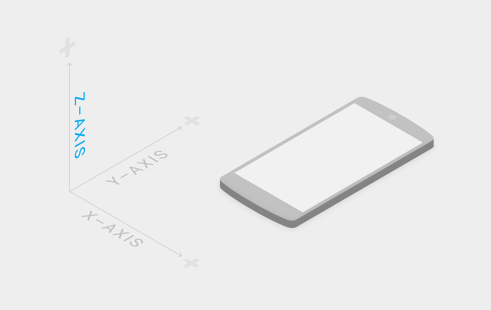

머티리얼 환경은 모든 개체가 x, y, z 차원을 갖고 있음을 의미하는 3차원 공간입니다. z축은 디스플레이 평면에 수직 방향과 일직선이 되며, 디스플레이를 보고 있는 사람을 향하여 확장하는 방향이 양의 z축이 됩니다. 머티리얼의 모든 시트는 z축을 따라 단일 위치를 차지하며, 표준값인 1dp 두께를 가집니다. 이것은 160의 픽셀 밀도를 가진 화면에서 1픽셀 두께와 동일합니다.
웹에서, z축은 레이어를 위해 사용되지만, 원근법을 위해 사용되지는 않습니다. 3차원 세계는 y축을 조작하는 것에 의해서 에뮬레이트됩니다.

x, y, z축의 3차원 공간